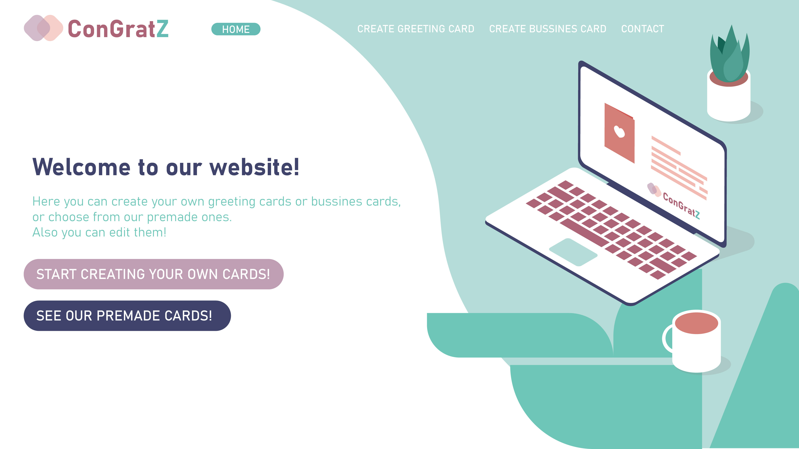
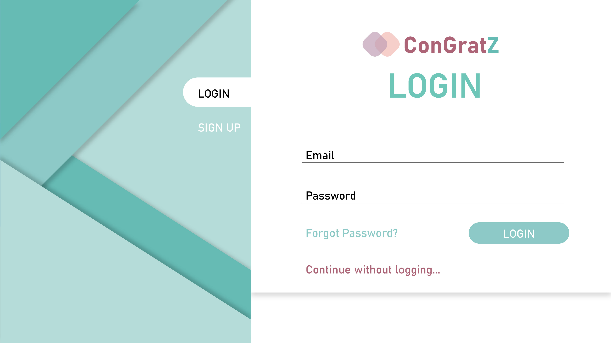
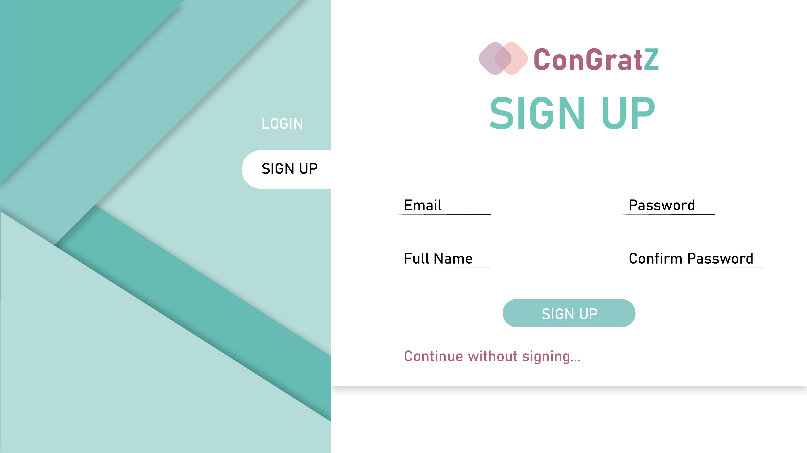
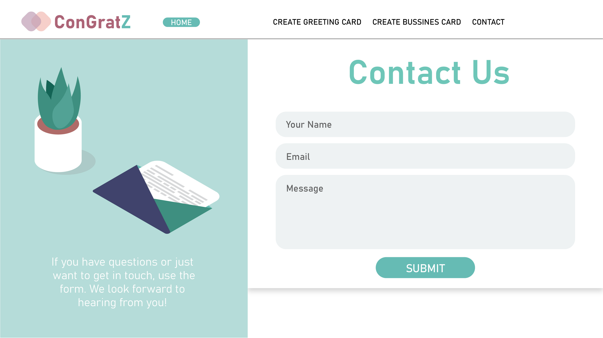

Introducere
1.1 Scop
Site-ul ConGratZ este destinat persoanelor ce vor să își creeze propriile felicitări pentru zile aniversare și ocazii speciale, dar și cărți de vizită pentru business, într-un mod cât mai ușor și intuitiv. Este ușor de utilizat: accesezi situl, după fie îți creezi propria felicitare/carte de vizită, fie îți alegi una deja existentă.
1.2 Audiența țintă
Acest document este destinat tuturor persoanelor ce doresc să afle mai multe informații despre site, cum ar fi: cum se folosește zona de editare a cărților de vizită/felicitărilor.
1.3 Scopul sitului
Site-ul are scopul de a ajuta userii care au nevoie de felicitări sau/și cărți de vizită personalizate într-un mod cât mai plăcut și ușor.
1.4 Referințe
Pentru a putea realiza o interfață a site-ului cât mai atractivă și ușor de folosit, am analizat câteva situri:
w3schools.comCloudflare.com
greetingsisland.com
Descriere
1.1 Perspectiva produsului
Produsul își propune realizarea de cărti de vizită și felicitări personalizate pentru utilizatori.
1.2 Funcționalitățile produsului
Cu ajutorul sitului, utilizatorii vor putea, cu sau fără cont, să își creeze propriile cărți de vizită/felicitări. Pentru felicitări utilizatorul va putea, într-un editor, să pună diferite imagini, să adauge text, să aleagă dintre diferite culori etc.
După terminarea design-ului dorit, utilizatorul va putea trimite altor utilizatori prin e-mail, link direct, va putea descărca sub formă de pdf, va putea printa felicitarea, va putea salva în baza de date (în cazul în care are cont). Pentru cărțile de vizita, pe lângă cele menționate mai sus, va putea încărca un fișier .XML pentru completarea automată a datelor.
1.3 Categorii de utilizatori
Situl va putea fi folosit de orice persoană obișnuită cu cunoștințe minime de navigare pe un site, fiind intuitiv și usor de utilizat.
1.4 Mediu de operare
ConGratZ este o aplicație WEB ce folosește HTML și CSS, deci poate fi rulată în orice browser.
1.5 Design și constrângeri de implementare
Fiind o aplicație online ce creează felicitări și cărți de vizita, trebuie să ne limităm la o dimensiune specifică acestora. Astfel, vor putea fi adăugate imagini/text/elemente de design grafic într-o arie bine definită.
Cerințe externe
1.1 Interfață utilizator
Home Page
Greetings & Business Card Pages

Login Page
Sign Up Page
Contact Page
1.2 Interfață software
Aplicația se conectează la o bază de date relațională pentru a putea stoca atât datele utilizatorilor, cât și felicitările/cărțile de vizită create de aceștia.
1.3 Interfață de comunicare
User-ul și server-ul folosesc protocolul de comunicare HTTP pentru a interacționa.
Funcționalități
1.1 Autentificare/Înregistrare
User-ul care deține deja un cont va introduce numele de utilizator și parola pentru autentificare, respectiv user-ul care nu are un cont va introduce pe lângă acestea și adresa de e-mail și numele complet pentru crearea unui cont. Datele introduse, după validare, vor fi trimise către server.
1.2 Crearea de felicitări/cărți de vizită
Utilizatorul va dispune de o zonă în care își va putea crea propria felicitare/carte de vizită.
1.3 Save
Felicitarea/cartea de vizită creată va fi salvată în baza de date.
1.4 Generate Link
Un link va fi generat pentru distribuirea felicitării/cărții de vizită către alte persoane.
1.5 Send
Felicitarea/cartea de vizită va putea fi trimisă prin e-mail în format electronic.
1.6 Download PDF
Utilizatorul va putea descărca ceea ce a creat în format PDF.
1.7 Print
Utilizatorul va putea printa ceea ce a creat.
1.8 Upload
Utilizatorul va putea încarca diferite imagini/fișiere .XML.
1.9 Contact
Utilizatorul va putea lua legătura cu administratorii sitului pentru orice eventuale probleme sau întrebări.
Cerințe non-funcționale
Aplicația WEB este una sigură, posibile probleme ar putea apărea din partea bazei de date folosite.
Aplicația va fi protejată împotriva atacurilor de tip SQL-injection.